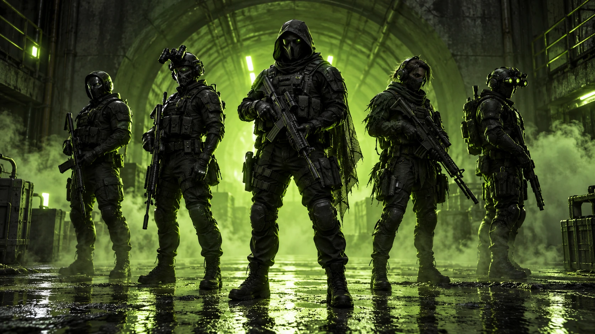

STANDOFF 2 / CLAN COMMUNITY
NULVОдин тег.
Одна команда.
Ники разные. Нашивка одна.
Здесь — люди, которые делают NulvTeam.
02 / КТО МЫ
За тегом —
люди.
NulvTeam — наш клан в Standoff 2. Этот сайт посвящён его участникам: каждому нику, каждой аватарке и общей истории, которую ещё предстоит написать.
Наш состав и наш стиль: чёрный фон, кислотный зелёный и узнаваемый знак NULV. У каждого участника — свой характер, у всех — общий тег.
03 / НАШ СОСТАВ
Каждый на своём месте.
Данные со скриншотов клана
11 октября 2026
Никого не нашлось.

НАШ ЗНАК
По отдельности — ники.
Вместе — NULV.
Свой цвет. Свой состав. Своя команда.
04 / ВИЗУАЛЬНЫЙ МИР
Свой вайб.
Авторские игровые иллюстрации
и улучшенные аватарки участников
ФИРМЕННЫЙ ЗНАК
Узнаваемый с первого взгляда.
Логотип из игры, восстановленный в большом разрешении.

05 / ВСТРЕТИМСЯ В ИГРЕ
Ищи [NULV].
Хочешь связаться с кланом? Найди NulvTeam в игре или используй ID лидера. Доступность мест и условия вступления уточняй у команды.
- 01
Открой Standoff 2
Перейди в раздел кланов.
- 02
Найди NulvTeam
Тег клана — NULV. Узнавай по зелёному знаку.
- 03
Свяжись с командой
Запроси актуальные условия в игре.